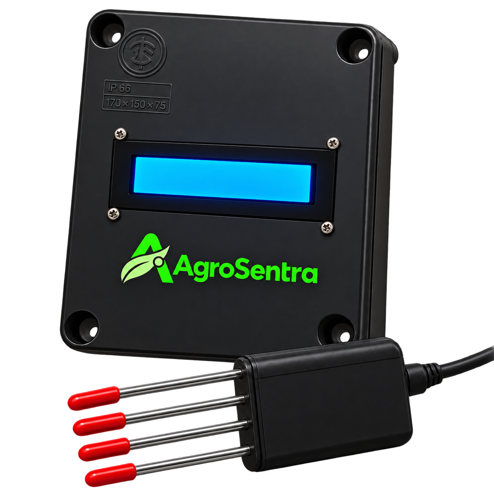

The small changes. The bigger picture. All in one place.
Latest readings
Station 001 /Awaiting sensor data
Soil moisture
—%
Water content01
Soil pH
—pH
Acidity & alkalinity02
Temperature
—°C
Below the surface03
Conductivity
—µS/cm
Dissolved minerals04
A CLOSER LOOK
Moisture over time
Soil moisture (%)No samples yet
A little time tells a lot.Your soil’s story starts with the first reading.
Recorded measurements will appear here
OUT IN THE FIELD001
++

A good listener.
Ten channels. One connected station.
HOW THINGS LOOK
Soil condition
Awaiting data
—/ 100
Getting to know your soil.
A condition score will appear as measurements arrive from your station.
——
THERE’S MORE TO THE STORY
REAL-TIME MEASUREMENTS
Live readings
Every measurement, as it comes in from your station.
Awaiting readings
LIVE TREND
Soil response graph
Latest 40 updates
Moisture
--
%
pH
--
pH
Temperature
--
°C
EC
--
µS/cm
Voltage--
V
Current--
mA
Nitrogen--
N
Phosphorus--
P
Potassium--
K
Salinity--
sensor units
RECORDED DATA
History
A record of what’s changed. Explore your measurements or take them with you.
Samples loaded0Coverage--Avg. moisture--Avg. pH--
HISTORICAL TREND
Recorded soil history
RECENT RECORDS
History table
Newest first
Date / Time
Temp °C
Moisture %
pH
EC
N
P
K
Salinity
Waiting for Firebase history...
PATTERNS & OBSERVATIONS
Soil insights
Make sense of the patterns in your live and historical readings.
SOIL STABILITY
--/100
Waiting
Collecting historical samples for baseline analysis.
AGROSENTRA INSIGHT
Current interpretation
Baseline: --
Waiting for live and historical soil readings.
Collecting data
Moisture Trend
--
Waiting for history
pH Trend
--
Waiting for history
Nutrient Balance
--
N / P / K comparison
Salinity Risk
--
Waiting for reading
Anomaly Detection
--
Building baseline
History Samples
0
No history yet
These analytics are browser-side decision-support indicators based on measured values and recent statistical patterns.
They are not a replacement for laboratory soil analysis.
ENVIRONMENTAL CONTEXT
Weather
A little context from above ground. Weather near your monitoring site.
Probe and model temperature will be compared here.
Context confidence--
Depends on successful location sync.
External soil values are model estimates used only as environmental context. AgroSentra001 probe measurements remain the primary soil data source.
HARDWARE MODEL
AgroSentra001
Prototype soil monitoring unit with local LCD display, RS485 multi-parameter probe and Firebase connectivity.
Prototype Model
INTERACTIVE HARDWARE VIEWASSEMBLED
Complete AgroSentra001 assembly
01
Grove RGB LCD
Display layer
02
Grove Shield
Interconnect layer
03
ESP32 Controller
Control core
04
MAX485
RS485 interface
05
INA219
Power monitoring
Ready to inspect
SOIL MONITORING UNIT
One unit. Multiple soil parameters.
AgroSentra001 monitors soil temperature, moisture, pH, electrical conductivity,
nitrogen, phosphorus, potassium and salinity through an RS485 soil probe.
An INA219-based power-monitoring stage reports operating voltage and current,
while the integrated LCD provides local readings without requiring the dashboard.